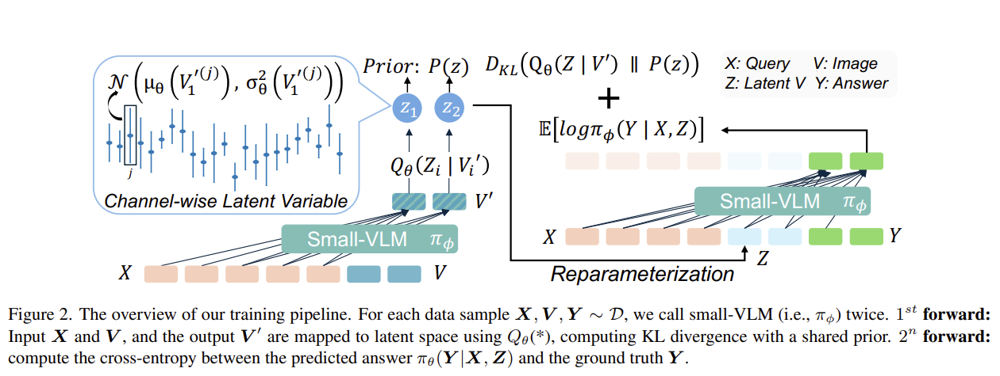
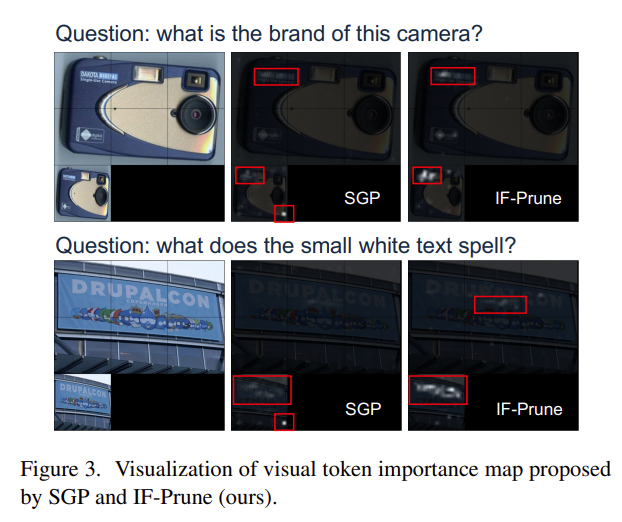
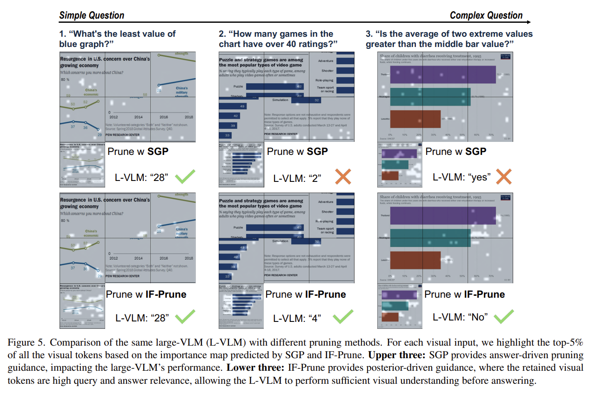
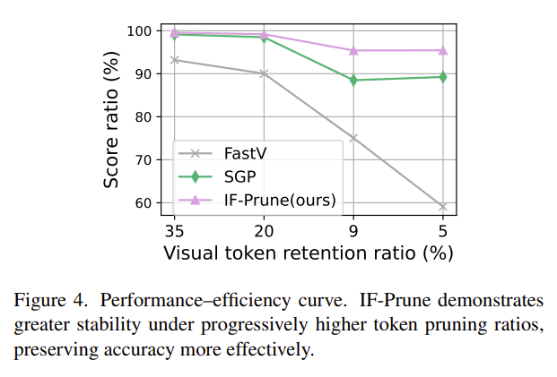

Vision-language models (VLMs) with dynamic-resolution vision encoders achieve strong performance but face significant efficiency challenges due to long input sequences. A common approach is to assess the importance of tokens and prune those that are less informative. Recent methods that use a small VLM to generate importance maps for visual tokens have outperformed existing rule-based and similarity-driven pruning approaches, particularly at high pruning ratios. However, directly using the small VLM remains unreliable, as it relies on aggregated visual attention weights as an importance score, which can lead to noisy guidance when the generated tokens are incorrect.
To address this, we invert the approach by having the small VLM detect non-informative visual tokens based on the user's query. By adding a variational information bottleneck to the small VLM, we can approximate the entropy of each visual token to provide pruning guidance. Such a posterior-guided pruning method enables the large VLM to retain its reasoning capacity while improving efficiency.
Extensive experiments on eight benchmarks demonstrate the effectiveness of our approach. With only 5% of visual tokens retained, the large VLM preserves 95% of its original performance, outperforming the state of the art by 8%.
Existing methods like SGP aggregate attention weights from a small VLM's generated answer tokens to build importance maps. But when the small VLM lacks prior knowledge to answer a query correctly, the importance map becomes noisy and unreliable — retained tokens are either directly tied to wrong answers or irrelevant noise.
IF-Prune inverts the paradigm: instead of asking a small model to identify important tokens, we train it to approximate the distribution of non-informative tokens via a variational information bottleneck. Tokens with low KL divergence from the prior carry little task-relevant information and are pruned.
IF-Prune casts visual token importance estimation as an amortized variational inference problem, using KL divergence between a learned posterior and prior as a principled importance score — moving beyond attention heuristics.
A lightweight, single forward pass of the small VLM produces pruning guidance — no autoregressive decoding needed. Compatible with FlashAttention since no explicit attention weights are required.
A single fine-tuned small VLM (InternVL2.5-1B) transfers pruning guidance to larger models (InternVL2-8B, InternVL2-26B) without additional training, enabling scalable deployment.

Figure 2: Training pipeline. For each sample (X, V, Y), the small-VLM is called twice. 1st forward: input X and V, map output V' to latent space via Qθ, compute KL divergence with shared prior. 2nd forward: compute cross-entropy between predicted answer πφ(Y|X,Z) and ground truth Y.
Given visual embeddings V' = {V'1, ..., V'm} after the small-VLM forward pass, we map each to a latent variable Zi via a token-wise Gaussian posterior:
Qθ(Zi | V'i) = N(μθ(V'i), σ2θ(V'i))
The KL divergence between this posterior and a learnable per-channel prior P(z) = N(μp, σ2p) serves as the importance score: tokens deviating strongly from the prior carry higher task-relevant information, while near-prior tokens contribute little and are pruned.
A channel-wise gating mechanism with sigmoid activation modulates the posterior mean, upper-bounding how far it can deviate from the prior to stabilize the KL term:
μθ(V'i) = σ(Iθ(V'i)) ⊙ (V'i - μp) + μp
The overall loss balances reconstruction and compression:
L = E[log πφ(Y | X, Z)] - (β/m) Σi KL(Qθ(Zi | V'i) || P(z))
The reconstruction loss ensures latent tokens preserve sufficient information for accurate answer prediction, while the KL penalty regularizes each token against the prior at the token level (not sequence level), enabling granular importance estimation and adaptive compression. An adaptive KL weighting schedule β(s) = τmax - (τmax - τmin) * min(1, s/γ) stabilizes training.
At inference: (1) Pass text + visual tokens to the small-VLM in a single forward pass. (2) Extract V' from last hidden states (now containing query information via causal attention). (3) Compute per-token KL divergence as importance scores. (4) Retain top-K% tokens by ranked importance, hard-prune the rest (including position embeddings). (5) Forward remaining tokens to the large-VLM for reasoning.
The small-VLM (InternVL2.5-1B) shares the same architecture as the large-VLM for consistent visual encoding. The projection module Qθ consists of two MLP layers plus two learnable prior embeddings (μp and σ2p). The small-VLM is fine-tuned with LoRA for one epoch on a mixture of instruction data from ShareGPT-4V, LLaVA, and DVQA.
We evaluate on eight benchmarks spanning OCR/chart understanding (TextVQA, ChartQA), real-world scenarios (MMStar, RealWorldQA), and visual reasoning (MME, MMBench, MM-Vet, GQA). At 5% token retention, IF-Prune preserves 95.4% of original performance while SGP and FastV degrade to 88.9% and 67.1%.
| Method | K | L | TextVQA | ChartQA | GQA | MMStar | MMBench | MM-Vet | MME | RWQA | Score %↑ |
|---|---|---|---|---|---|---|---|---|---|---|---|
| InternVL2-26B | 100% | - | 82.45 | 84.92 | 64.89 | 60.08 | 83.46 | 64.00 | 2270 | 67.58 | 100.00% |
| ToMe | 20% | 9 | 75.74 | 62.44 | 63.61 | - | 81.82 | 52.50 | 2178 | - | 94.88% |
| FastV | 20% | 9 | 75.62 | 71.68 | 61.20 | 53.01 | 78.31 | 45.00 | 2140 | 63.27 | 93.18% |
| SGP | 20% | 9 | 81.97 | 81.68 | 64.62 | 56.77 | 80.76 | 62.34 | 2258 | 67.50 | 99.15% |
| IF-Prune | 20% | 9 | 81.48 | 82.60 | 64.56 | 57.46 | 80.58 | 61.01 | 2271 | 66.14 | 99.55% |
| FastV | 20% | 0 | 73.42 | 67.32 | 60.68 | 50.55 | 78.26 | 52.66 | 2110 | 60.26 | 90.03% |
| SGP | 20% | 0 | 81.14 | 80.92 | 64.70 | 56.97 | 80.50 | 61.33 | 2252 | 67.90 | 98.49% |
| IF-Prune | 20% | 0 | 81.28 | 82.36 | 64.86 | 56.45 | 79.98 | 60.32 | 2263 | 66.54 | 99.19% |
| ToMe | 5% | 2 | 51.69 | 28.60 | 57.52 | - | 73.09 | 37.70 | 1933 | - | 82.33% |
| FastV | 5% | 2 | 43.84 | 26.10 | 44.90 | 32.65 | 62.33 | 31.60 | 1799 | 44.05 | 75.05% |
| SGP | 5% | 2 | 78.70 | 71.08 | 62.04 | 50.92 | 73.71 | 49.82 | 2007 | 64.84 | 88.50% |
| IF-Prune | 5% | 2 | 79.24 | 71.12 | 63.52 | 53.10 | 77.58 | 50.83 | 2189 | 65.62 | 95.41% |
| FastV | 5% | 0 | 20.06 | 24.64 | 43.41 | 32.65 | 36.94 | 21.74 | 1418 | 44.05 | 59.10% |
| SGP | 5% | 0 | 78.77 | 70.68 | 62.08 | 50.62 | 73.28 | 50.23 | 2028 | 65.10 | 89.25% |
| IF-Prune | 5% | 0 | 79.04 | 70.96 | 63.53 | 52.49 | 77.23 | 51.42 | 2190 | 66.01 | 95.44% |
Table 1: InternVL2-26B with different pruning methods. K = token retention ratio, L = decoder layer for pruning. Bold = best.
A single fine-tuned InternVL2.5-1B guides pruning for InternVL2-8B without retraining. At K=5%, IF-Prune achieves 94.03% vs SGP's 90.34% (+3.69 points).
| Method | K | GQA | MMStar | MMBench | RWQA | Score % |
|---|---|---|---|---|---|---|
| InternVL2-8B | 100% | 62.70 | 59.11 | 81.90 | 65.10 | 100% |
| SGP | 20% | 62.59 | 56.37 | 80.67 | 64.58 | 98.29% |
| IF-Prune | 20% | 62.54 | 56.93 | 79.64 | 63.14 | 97.56% |
| SGP | 5% | 59.95 | 50.37 | 71.22 | 61.31 | 90.34% |
| IF-Prune | 5% | 58.47 | 53.34 | 76.46 | 62.48 | 94.03% |
Table 2: Transferability to InternVL2-8B.
| Method | K | L | S-F | L-F | FLOPs %↓ | Score %↑ |
|---|---|---|---|---|---|---|
| InternVL2-26B | 100% | - | - | 117.7T | 100.0% | 100% |
| SGP | 20% | 9 | 14.5T | 81.4T | 81.5% | 99.15% |
| SGP | 5% | 2 | 14.5T | 67.5T | 69.7% | 88.50% |
| SGP | 5% | 0 | 14.5T | 65.4T | 67.9% | 89.25% |
| IF-Prune | 20% | 9 | 4.7T | 83.4T | 74.6% | 99.55% |
| IF-Prune | 5% | 2 | 4.7T | 69.3T | 62.9% | 95.41% |
| IF-Prune | 5% | 0 | 4.7T | 67.3T | 61.2% | 95.44% |
Table 3: FLOPs comparison. IF-Prune uses 3x fewer small-model FLOPs than SGP (single pass vs autoregressive).
| Method | K | Prefill (ms) | Decode (ms) | Tokens/s |
|---|---|---|---|---|
| InternVL2-8B | 100% | 229.1 | 55.8 | 16.9 |
| SGP | 5% | 524.5 | 51.3 | 16.4 |
| IF-Prune | 5% | 238.5 | 47.6 | 19.5 |
Table 4: Latency analysis over 5k samples. IF-Prune achieves 2.2x faster prefill than SGP.
We ablate the gating activation (sigmoid vs exponential) and KL weighting strategy. Sigmoid gating consistently outperforms exponential (90.80% vs 89.83%), and adaptive KL weighting with schedule τ(0.2, 0.5) achieves the best overall score of 91.19%.
| β | f(*) | ChartQA | GQA | MMStar | MMBench | TextVQA | MM-Vet | RWQA | Score % |
|---|---|---|---|---|---|---|---|---|---|
| - | - | 84.92 | 64.89 | 60.08 | 83.46 | 82.45 | 64.00 | 67.58 | 100% |
| 0.5 | exp | 69.92 | 63.34 | 52.25 | 77.15 | 78.28 | 49.63 | 65.23 | 89.83% |
| 0.5 | σ | 70.28 | 63.77 | 52.58 | 75.77 | 78.72 | 53.30 | 66.27 | 90.80% |
| τ(0,1) | σ | 71.56 | 63.58 | 52.61 | 75.00 | 78.55 | 50.50 | 65.10 | 90.05% |
| τ(0.2,0.5) | σ | 70.96 | 65.53 | 52.49 | 77.23 | 79.04 | 51.42 | 66.01 | 91.19% |
Table 5: Ablation of gating activation and KL weighting. All with K=5%, L=0 on InternVL2-26B.
IF-Prune consistently identifies semantically meaningful and question-related visual cues, while SGP primarily localizes tokens tied to the predicted answer. On complex queries requiring broader visual context, IF-Prune's posterior-driven guidance enables the large VLM to answer correctly where SGP fails.

Figure 3: Visual token importance maps. IF-Prune highlights broader, semantically relevant regions compared to SGP's narrow answer-driven attention.

Figure 5: On complex questions, SGP's answer-driven pruning fails while IF-Prune's posterior-driven guidance preserves sufficient visual context for correct reasoning.

Figure 4: IF-Prune demonstrates greater stability under progressively higher pruning ratios, preserving accuracy more effectively than SGP and FastV.
@inproceedings{sun2026ifprune,
title = {IF-Prune: Information-Flow Guided Token Pruning
for Efficient Vision-Language Models},
author = {Sun, Guohao and Wang, Yufei and Ma, Sizhuo
and Xie, Yuege and Cheng, Yuting
and Tao, Zhiqiang and Wang, Jian},
booktitle = {Proceedings of the IEEE/CVF Conference on
Computer Vision and Pattern Recognition (CVPR)},
year = {2026},
}This work was supported by Snap Inc.